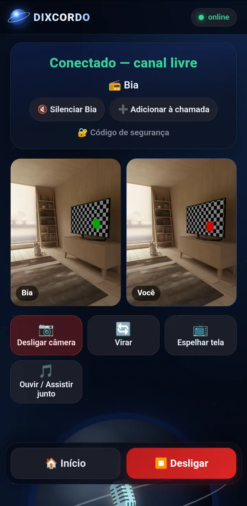
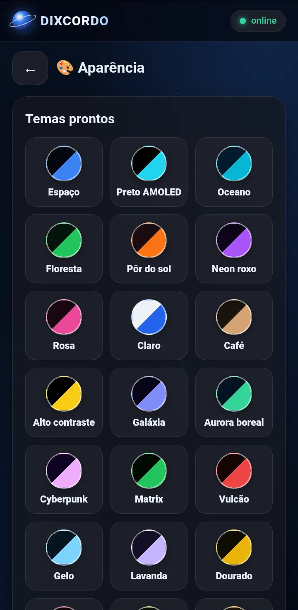
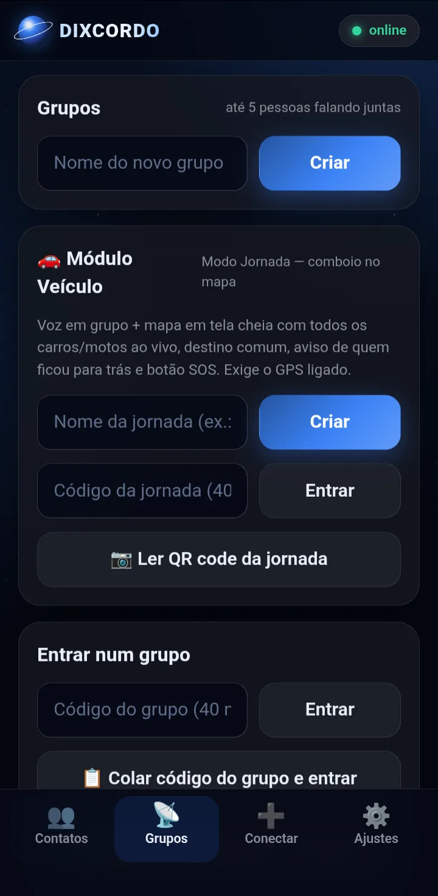
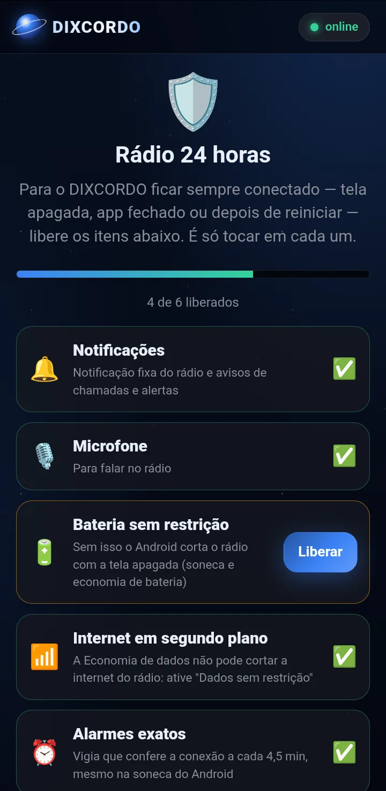

Walkie-talkie para Android
Aperte e fale.
Direto de celular para celular.
Rádio, chamadas de voz e vídeo, grupos e comboio de carros — tudo cifrado, sem conta, sem número de telefone e sem um servidor no meio guardando as suas conversas.
- 🔒 Cifrado de ponta a ponta
- 🚫 Sem conta
- 📡 Funciona com a tela apagada
- 🚗 Comboio sem internet
Recursos
Um rádio de verdade no seu bolso
Feito para falar rápido: toca, fala, solta. E quando precisar de mais, tem vídeo, tela, música junto e muito mais.

Rádio e chamadas
Fale na hora, com ou sem vídeo
- 🎙️Aperte para falar — como um walkie-talkie. Dá para falar até com a tela apagada, segurando o botão de volume.
- 📷Vídeo quando quiser — a câmera começa desligada; ligue, vire ou desligue no meio da conversa.
- 📺Espelhar a tela — mostre o seu celular para quem está na chamada.
- 🎵Ouvir / assistir junto — YouTube ou Spotify tocando sincronizado para todos.
- 🤖Supressor de ruído com IA — tira barulho de motor e vento da sua voz, no próprio celular.
Modo Jornada
Comboio de carros e motos, todo mundo no mapa
- 🗺️Todos no mapa, ao vivo — veja onde cada um está, a velocidade e quem ficou para trás.
- 🧭Navegação por voz — rota curva a curva em português, com paradas no caminho definidas pelo líder.
- 🚦Radares, semáforos e limites — aviso por voz e bipe quando passar do limite da via, e alertas da comunidade (buraco, acidente, obra…).
- ⛽Abastecer e Banheiro — um toque avisa o comboio inteiro.
- 📶Sem internet também — os celulares próximos se conectam entre si (Bluetooth e Wi-Fi Direct) e repassam voz, posição e SOS.
- 🆘SOS — segure 3 segundos e todos recebem uma sirene, mesmo no silencioso.

Do seu jeito
Mais de 20 temas e um editor completo
Escolha um tema pronto ou crie o seu: cores, fonte, tamanho do texto, arredondamento, transparência e fundo (degradê, estrelas ou uma foto sua). Salve, exporte e compartilhe.
E tem mais
Tudo o que vem no app
Grupos
Até 5 pessoas no mesmo canal, com vídeo e entrada por código ou QR code.
Recado de voz que some
Até 60 s para quem está offline. Depois de ouvido, é apagado do celular e dos servidores.
Localização em tempo real
Veja seus contatos no mapa, um por um ou todos de uma vez. Só quem você escolher.
Alerta
Uma sirene no celular do contato, que toca mesmo no silencioso — para emergências.
Arquivos
Mande fotos, vídeos e documentos direto para o contato, cifrados.
Rádio 24 horas
Fica escutando com o app fechado e liga sozinho quando o celular reinicia.
Sem número de telefone
Você adiciona contatos por um código de 30 números (ou QR code) que muda a cada conexão.
Modo Tor
Para quem quer ainda mais privacidade: a internet do app passa pelo Orbot.


Segurança e privacidade
Suas conversas não passam por ninguém
No DIXCORDO não existe um servidor da empresa no meio. A voz e o vídeo vão direto de um celular para o outro, cifrados duas vezes.
Duas camadas de criptografia
A conexão direta já é cifrada (DTLS-SRTP), e cada pedaço de voz e vídeo ganha mais uma camada AES-256-GCM com chaves que só os dois celulares conhecem.
Sem servidor próprio
Para se encontrarem, os celulares trocam avisos cifrados por relés públicos e independentes (rede Nostr). Eles não conseguem ler nada.
Sem conta, sem cadastro
Não pedimos e-mail, telefone nem nome verdadeiro. Sua identidade é uma chave criada no seu próprio celular.
Código de segurança
Confira com o contato que ninguém está no meio: os dois veem o mesmo código.
Instalar
Pronto em menos de um minuto
O DIXCORDO é distribuído direto por aqui, sem a Play Store. Por isso o Android faz algumas perguntas na primeira vez — é normal.
- Toque em Baixar o DIXCORDO e espere terminar. Se o navegador avisar que o arquivo "pode ser perigoso", toque em Baixar mesmo assim — ele avisa isso para qualquer app fora da loja.
- Abra o arquivo DIXCORDO.apk pela notificação do download (ou em Arquivos › Downloads).
- Se pedir, permita Instalar apps desconhecidos para o navegador ou para o app de arquivos.
- Abra o DIXCORDO e siga o guia Rádio 24 horas para liberar bateria e permissões.
🛡️ Apareceu um aviso do Play Protect?
Se aparecer "App desconhecido", "Verificação recomendada" ou "Enviar app para verificação": toque em Verificar app (ou Enviar) e depois em Instalar mesmo assim. O aviso aparece só porque o app não veio da Play Store e o Google ainda não o conhece.
As atualizações chegam sozinhas pelo próprio app e só instalam se forem assinadas com a mesma chave do app que você já tem — um arquivo adulterado é recusado pelo Android.
Novidades
O que mudou na última versão
Dúvidas
Perguntas frequentes
O DIXCORDO é vírus? Por que o celular avisa?
Não. O Android avisa para qualquer app instalado fora da Play Store, porque o Google não conhece o arquivo. O DIXCORDO não mostra anúncios, não pede cadastro e não envia suas conversas para servidor nenhum. Se aparecer o aviso do Play Protect, toque em Verificar app e depois em Instalar mesmo assim.
Por que não está na Play Store?
O app é distribuído direto, por este site, e se atualiza sozinho. Assim as correções chegam a todos no mesmo dia.
É grátis?
Sim. Basta baixar e instalar.
Preciso de internet?
Para conversar e fazer chamadas, sim (Wi-Fi ou dados móveis). No Modo Jornada, quando a internet cai, os celulares próximos se conectam direto entre si e continuam trocando voz, posição e SOS.
Funciona com a tela apagada ou com o app fechado?
Sim. Siga o guia Rádio 24 horas no primeiro uso para liberar bateria e permissões — alguns celulares (Xiaomi, Samsung, Motorola…) fecham apps em segundo plano se isso não for feito.
Como adiciono um contato?
Na aba Conectar, mande o seu código de 30 números (ou mostre o QR code) para a outra pessoa. Quando ela adicionar, vocês dois já podem falar.
Como atualizo?
O app procura versões novas sozinho e avisa. Se preferir, baixe de novo por esta página e instale por cima — seus contatos e grupos continuam.
Quais celulares são compatíveis?
Android 10 ou mais novo, com o Android System WebView e o Google Chrome atualizados pela Play Store.
Bora falar?
Baixe, mande o seu código para quem você quer chamar e aperte para falar.